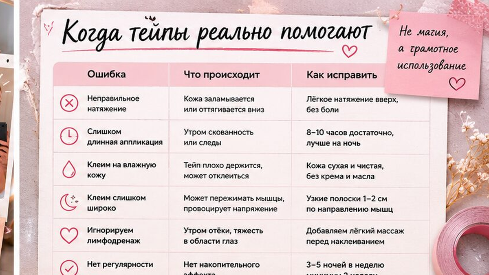
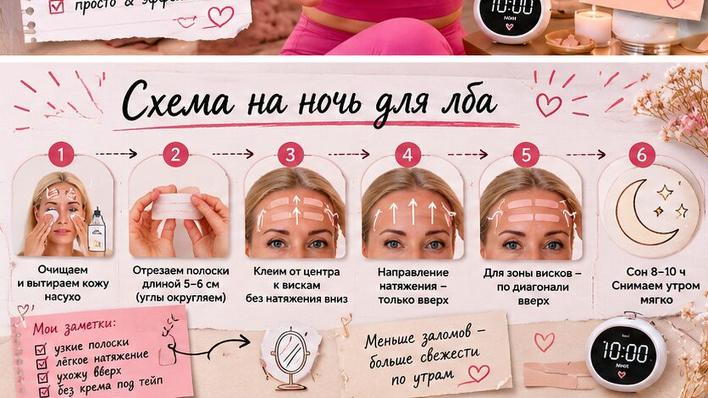
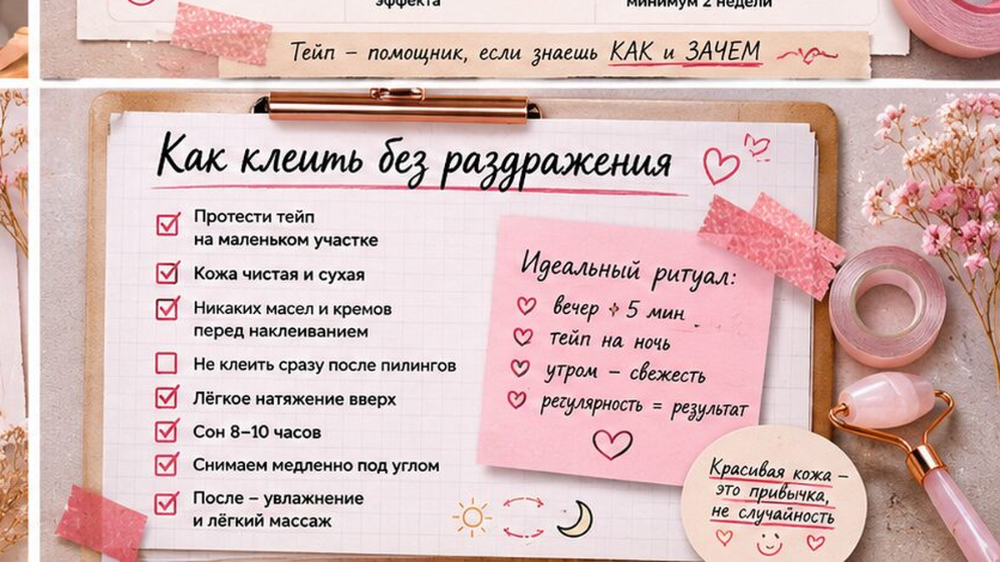

Угол молодости - это не модное слово, а конкретная точка: острый переход между овалом лица и шеей у основания нижней челюсти. Когда он "плывёт", лицо выглядит уставшим даже при хорошем уходе. Хорошая новость: за 14 дней дома можно вернуть более чёткий контур, если работать с платизмой, лимфой и привычной осанкой - без силового давления и без обещаний "нового лица за три дня".
Я смотрю на овал как на систему: шея, челюсть и верхняя треть связаны. Если зажата носогубная зона или застой лимфы, нижняя линия всегда проигрывает. Ниже - что такое угол молодости, тест овала, пошаговый комплекс на две недели и привычки, которые реально усиливают результат.

Угол молодости - это зона под ухом, где линия нижней челюсти встречается с шеей. В молодости переход резкий, почти прямой. С возрастом и при хроническом напряжении он часто смягчается: появляется "размытый" контур, ощущение второго подбородка или "поплывшего" овала.
Главные участники - платизма (тонкая широкая мышца, которая тянет кожу шеи вниз), мышцы челюсти и зона лимфооттока. Когда платизма в гипертонусе или лимфа застаивается, ткани "опускаются", и угол теряет чёткость. Крем сам по себе не вернёт тонус мышце - нужна регулярная мягкая работа с тканями и привычками.
Честно: полностью "вернуть 20 лет" нереалистично, но визуально оживить контур и убрать уставший силуэт за две недели регулярной практики - реальная задача. Тут важный момент: результат держится только при регулярности, а не от одной "ударной" сессии в выходные.

Перед стартом 14-дневного цикла я всегда прошу три быстрых проверки. Это не диагноз, а ориентир - насколько зона перегружена.
Тест за 60 секунд:
Если при нажатии больно или есть отёк - снизьте интенсивность и исключите силовые движения до нормализации. Запишите результат теста в заметки: так проще сравнить ощущения на 7-й и 14-й день протокола.

Делайте на чистой коже, челюсть расслаблена, давление - 2–3 из 10. Частота: 5–6 раз в неделю, 8–10 минут за сессию.
Неделя 1 - базовый тонус:
Неделя 2 - добавьте лимфопоглаживание: после упражнений 2 минуты мягко ведите ладони от центра лица к ключицам, не давя на шею. Эту логику подробно разбирает массаж Асахи (Зоган) - направление движений и подготовка кожи там же.
Фиксируйте прогресс: фото в профиль в начале, на 7-й и 14-й день при одинаковом свете. Первые изменения по ощущениям обычно заметны к концу второй недели: меньше "тяжести" под челюстью, лицо спокойнее. Не пропускайте день отдыха - тканям нужно время на восстановление между нагрузками.
Упражнения работают быстрее, если убрать привычки, которые каждый день "ломают" овал. Верхняя треть тоже важна: зажим в носогубной зоне тянет контур вниз - проработку смотрите в материале про носогубные складки.
Чеклист перед стартом: проверьте осанку (голова над плечами), следите за положением телефона (не "двойной подбородок" в экран), пейте воду в течение дня, спите на подушке средней высоты, не зажимайте челюсть в стрессе.
| Привычка | Что происходит с контуром | Что делать |
|---|---|---|
| Сутулость и "телефонная шея" | Платизма укорачивается, угол смягчается | Каждый час - 30 секунд: плечи назад, подбородок параллельно полу |
| Зажатая челюсть | Усиливается напряжение нижней трети | Осознанно расслаблять зубы днём, не жевать жвачку часами |
| Мало движения лимфы | Утренний отёк "стирает" линию | 2 минуты поглаживания к ключицам после умывания |
| Агрессивный массаж | Микростресс, покраснение, усталый вид | Давление 2–3/10, без "продавливания" угла |
| Неподходящий уход | Раздражение мешает регулярности | Подберите базу под тип кожи в квизе типа кожи |
Если кожа склонна к отёкам или чувствительна, пройдите диагностику типа кожи - так проще выбрать средство для скольжения и не бросить протокол из-за раздражения.
Достоверность: рекомендации носят оздоровительно-косметический характер и не заменяют консультацию врача при острых или хронических состояниях.
Упражнения и мягкий массаж помогают вернуть тонус платизме и улучшить лимфоотток, из-за чего контур выглядит чётче. Полностью изменить анатомию костей нереально, но визуально овал часто оживает уже к концу двухнедельного цикла.
Оптимально 5–6 раз в неделю по 8–10 минут. Один день отдыха нужен, чтобы ткани не перегружались. При чувствительной коже начните с 4 раз и добавляйте лимфопоглаживание только на второй неделе.
Чаще всего это слишком сильное давление, работа по сухой коже или зажатая челюсть во время движений. Снизьте интенсивность до 2/10 и проверьте, расслаблены ли зубы и язык.
Не обязателен с первого дня, но на второй неделе мягкий лимфодренаж обычно ускоряет эффект. Подойдёт базовая последовательность Асахи - главное, направление к ключицам и лёгкое давление.
Не начинайте при остром воспалении, герпесе, свежих ранах, выраженном куперозе в обострении и после недавних инвазивных процедур. При хронических заболеваниях шеи или челюсти сначала обсудите нагрузку с врачом.